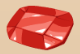
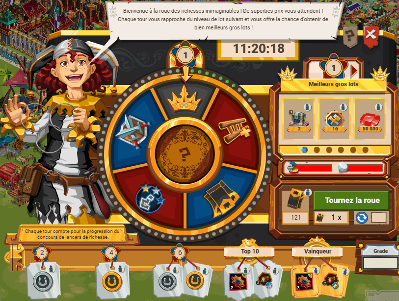
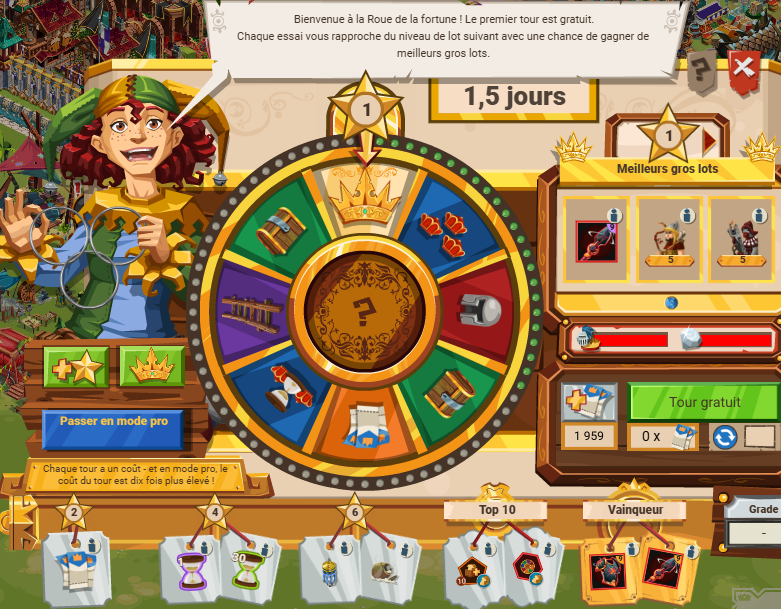
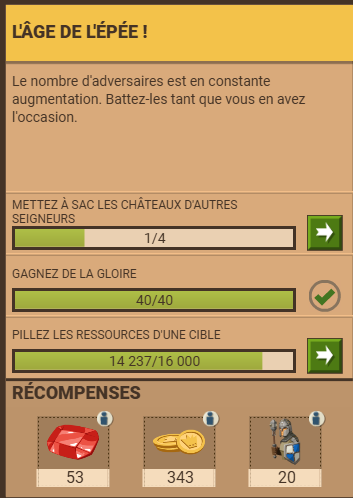
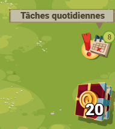
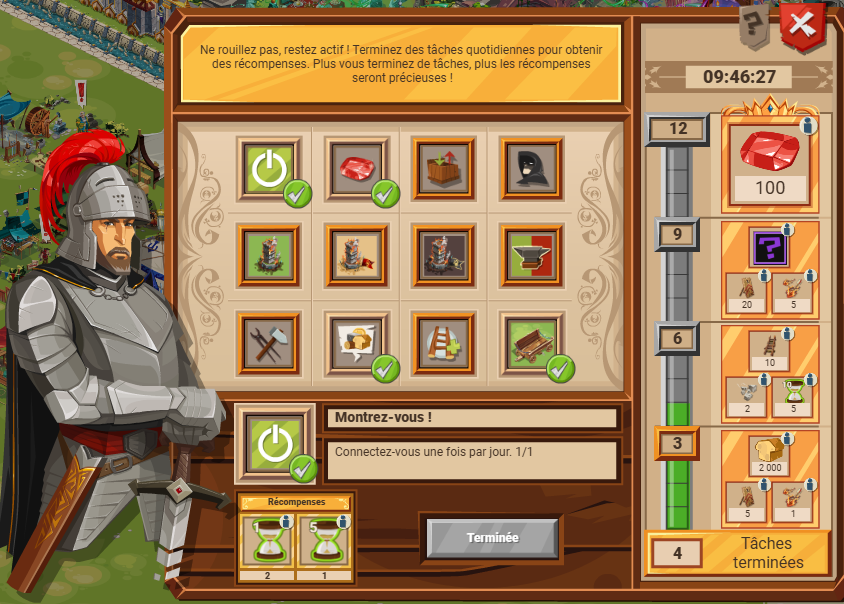

Tuto rubisLes rubis sont des ressources qui peuvent être gagnées gratuitement mais qui peuvent aussi être achetées en grande quantité dans gge. Cette page présente des techniques pour gagner des rubis sans payer, et comment les dépenser.
Il existe plusieurs façon d'obtenir des rubis, tel que :
Il y a des chances qu'en tournant la roue, ça tombe sur les ruru en récompenses oou sur le gros lot, avec des ruru entre 3 cartes.

Il y a des chances qu'en tournant la roue, ça tombe sur les ruru en récompenses oou sur le gros lot, avec des ruru entre 3 cartes. Il y a aussi le coffre, parfois.

Comme mentionné sur la page correspondante, attaquer des PNJ peut rapporter des rubis. Attaquer une forteresse en rapport plus, mais est plus difficile.
Certaines quêtes proposent des rubis en récompense, parfois à la place des XP ou en plus.

Chaque jour, des tâches sont disponibles en bas à droite de votre écan. 12 tâches peuvent être complétées, avec des missions assez simples, comme ataquer un fieffé coquin, une tour aux sables, mettre un message dans le chat de l'alliance, forger un équipement, recruter un soso minimum... Il y a une récompense toute les 3 tâches accomplies : soso, sablier voire ressources. La récompense pour accomplir les 12 tâches est de 100 rubis, ce qui en fait un bon moyen de gagner des rubis (100*x, c'est toujours ça de pris).


Pour bien dépenser ses rubis, il faut d'abord se poser deux questions :
En fonction des envies, il y a différentes approches pour dépenser ses rubis. Toutefois, il y a un consensus :
Bâtiments
INCONTOURNABLE ! La boulangerie réduit la consommation de bouffe des troupes stationnées dans un château. Au plus haut niveau, on peut réduire la conso des troupes de 30 ! C'est un effet non-négligeable, qui permet d'augmenter la taile d'une armée.
En fonction des besoins, on peut prioriser la tour de guet. Les écuries accélèrent les attaques/soutiens/charettes dès lors que des chevaux sont utilisés. Dans le cas des forteresses et du soutien, cela peut être vital. Mettre des loups féroces en attaque d'une forteresse avec des écuries lvl 1, c'est de l'argent perdu. La vitesse des charettes de marchandise est aussi aaccélérée.
La tour de guet détecte une attaque plus tôt, et lorsque l'on set connecté, ça peut être vital. Un autre atout est de prévenir les membres de l'alliance de l'attaque, ce qui permettra un soutien à temps. Le soutien des membre d'une alliance est souvent impossible à cause de quelques secondes voir minutes, raison pour laquelle un tour de guet peut parfois tout changer.
Avec un coût initial de 7100 rubis, il débloque un emplacement de construction da,s la file d'attente. Acheter ce bâtiment dépend de ce que son acheteur veut, et dépend de son stock de ressources.
On peut aussi compter (en fonction des envies) augmenter la capacité des charettes, acheter des perso (maraudeur surtout). Augmenter la capacité des charettes permet de monter plus rapidement les laboratoires et monument.
Lorsque l'on construit un bâtiment, fait un recherche, soigne des soso à l'hôpital ou tout autre action avec un temps d'attente, on peut être tenté de finir avec des rubis. Ne JAMAIS faire ça ! Pour la construction et ercherche, il y a les sabliers. Ce genre de dépense ne correspoond pas à un investissement et ne permet rien sur le long terme. Il y a également des bâtiments plus ou moin superflu, comme l'université, la forge, la quartier du constructeur, les demeures, le terrain d'entraînement...